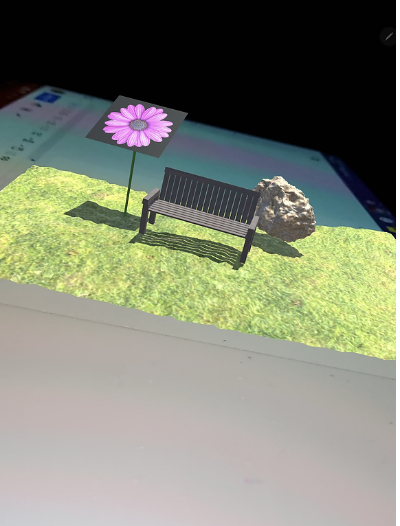

The objective of this project was to develop an Augmented Reality (AR) application in Unity, focused on creating a nature-inspired scene where images would be tracked and displayed on top of a reference image. Throughout the process, I faced several challenges, including issues with object visibility, image tracking, and lighting, but I overcame them by troubleshooting and refining my approach. The project required working across different tasks such as modeling in Blender, setting up scenes in Unity and Unreal Engine, and ensuring the correct deployment on various devices. Despite initial setbacks, the AR Garden was successfully brought to life, providing an engaging and interactive experience.
